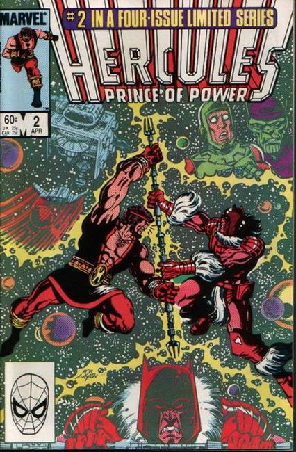
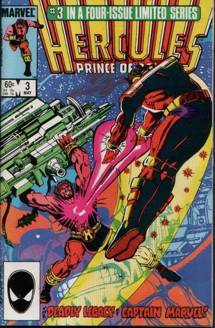
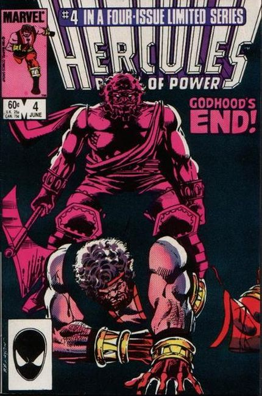

Issue #1 Story and art by Bob Layton."What Fools these Immortals Be!"
The Lion of Olympus has returned home. However, the lord of the Olympian gods has decreed a day of silence and peace throughout Mount Olympus. Well, Hercules was never one to sit idly by, and his signature brand of merriment and revelry soon echo throughout the halls. Enraged by his son's arrogance, Zeus banishes him to the one place that might teach even an immortal humility. Too long has Hercules dwelled among mortals so Zeus sends him out into the void of space. Out here among the countless stars he hopes Hercules will learn the lessons he himself could not teach.

"For the Love of the Gods!" Story and art by Bob Layton. Art assists by Luke McDonnell. Banished from Mount Olympus, Hercules is finding it difficult to follow the rules of the strange worlds and beings he is encountering among the stars. But, one thing he is familiar with is when a damsel is in trouble, the Lion of Olympus will be the first one to help. Layana Sweetwater has been kidnaped, but after Hercules storms the castle and rescues the fair maiden he soon learns there is more to her story than meets the eye.

"Whom the Gods would Destroy!" Galactus cameo. Story and Art by Bob Layton. Hercules and his friend Recorder are set upon buy a star-cruiser. When the Captain of the vessel explains the dire situation at hand, the man-god finds himself in the middle of a intergalactic civil war. Can Hercules prevent the worshipers of the God of Vengeance from destroying a world to appease their deity?

"Not Just another Galactus Story!" Story and Art by Bob Layton. Hercules lands on the planet Ciegrim-7 and is greeted with a heroes welcome. However, the revelry is cut short when he realizes that the God of Vengeance the Brotherhood worshiped is none other than the space god Galactus, perhaps the single most powerful entity in the known universe. The Lion of Olympus intends to take the fight to the World Devourer's own ship, but first he'll have to get past the newest Herald of Galactus, Nova (Frankie Ray). Hercules vs. Galactus.